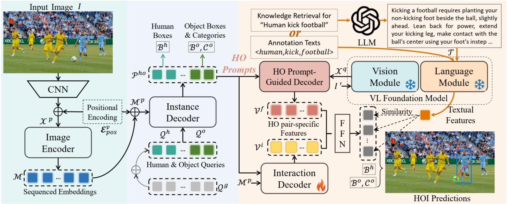

|
Yichao Cao
I am currently a Ph.D. student at Southeast University, where I also completed my master's degree under the supervision of Professor Lu Xiaobo. My research focuses on computer vision and artificial intelligence.
My research interests include, but are not limited to: (1) Human-Object Interaction Detection; (2) Fine-tuning and applications of multimodal large models; (3) Embodied intelligence. Additionally, I am passionate about and eager to explore other emerging fields.
Email /
CV /
Scholar /
Github
|
|
Research
I'm interested in computer vision, deep learning, generative AI, and video understanding. Most of my research is about object detection and action detection from images and videos. Some papers are highlighted.
|
|

|
Detecting any human-object interaction relationship: Universal hoi detector with spatial prompt learning on foundation models
Yichao Cao, Qingfei Tang, Xiu Su, Song Chen, Shan You, Xiaobo Lu, Chang Xu
NeurIPS, 2024
|

|
Re-mine, learn and reason: Exploring the cross-modal semantic correlations for language-guided hoi detection
Yichao Cao, Qingfei Tang, Feng Yang, Xiu Su, Shan You, Xiaobo Lu, Chang Xu
ICCV, 2023
|
|
|
Universal Frequency Domain Perturbation for Single-Source Domain Generalization
Chuang Liu, Yichao Cao, Haogang Zhu, Xiu Su
ACM MM, 2024
|
|
|
Searching for better spatio-temporal alignment in few-shot action recognition
Yichao Cao, Xiu Su, Qingfei Tang, Shan You, Xiaobo Lu, Chang Xu
NeurIPS, 2022
|
|
|
EFFNet: Enhanced feature foreground network for video smoke source prediction and detection
Yichao Cao, Qingfei Tang, Xuehui Wu, Xiaobo Lu
IEEE TCSVT, 2021
|
|
|
Coarse2fine: local consistency aware re-prediction for weakly supervised object localization
Yixuan Pan, Yao Yao, Yichao Cao, Chongjin Chen, Xiaobo Lu
AAAI, 2023
|
|
|
Attributes grouping and mining hashing for fine-grained image retrieval
Xin Lu, Shikun Chen, Yichao Cao, Xin Zhou, Xiaobo Lu
ACM MM, 2023
|
|
|
Global2Salient: Self-adaptive feature aggregation for remote sensing smoke detection
Shikun Chen, Yichao Cao, Xiaoqiang Feng, Xiaobo Lu
Neurocomputing, 2021
|
|
{kind=link}